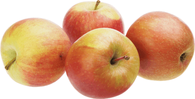

Яблоки Фуджи
Этот японский сорт покорил весь мир, и неспроста. Выращенные в теплом климате, эти яблочки наполняются сладостью, медовым вкусом и насыщенным ароматом. Плоды среднего размера, округлые, румяные, желто-розовые. Эти яблоки отлично хранятся и без специальных условий, сохраняя сочность и становясь еще слаще. При готовке не теряют вкус и аромат, поэтому подойдут и для варения, и для запекания.
| Цвет плодов: | красный |
| Высота дерева: | до 5 м |
| Вес плодов: | 200 гр |
| Вкус (сладкий, кислый и тд): | сладкий |
| Время созревания : | конец октября |
| Срок созревания | зимний |
| Срок хранения | до апреля |